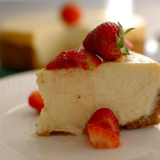

Main
Chantal's New York Cheesecake

Description
This New York cheesecake recipe is easy to make, and it's so delicious. Everyone that's tried it has said it tastes just like the ones you'd get in a deli! You'll love it!
Ingredients
- 15 graham crackers, crushed
- 2 tablespoons butter, melted
- 4 (8 ounce) packages cream cheese
- 1 ½ cups white sugar
- ¾ cup milk
- 4 eggs
- 1 cup sour cream
- ¼ cup all-purpose flour
- 1 tablespoon vanilla extract
Procedures
Step 1
- Preheat the oven to 350 degrees F (175 degrees C). Grease a 9-inch springform pan.
Step 2
- Preheat the oven to 350 degrees F (175 degrees C). Grease a 9-inch springform pan.
Step 3
- Mix cream cheese and sugar together in a large bowl until smooth. Blend in milk, then mix in eggs, one at a time, until just combined. Add sour cream, flour, and vanilla; mix until smooth. Pour filling onto prepared crust.
Step 4
- Bake in preheated oven for 1 hour. Turn the oven off; let cheesecake cool in the oven with the door closed for 5 to 6 hours to prevent cracking.
Step 5
- Chill in the refrigerator until serving.